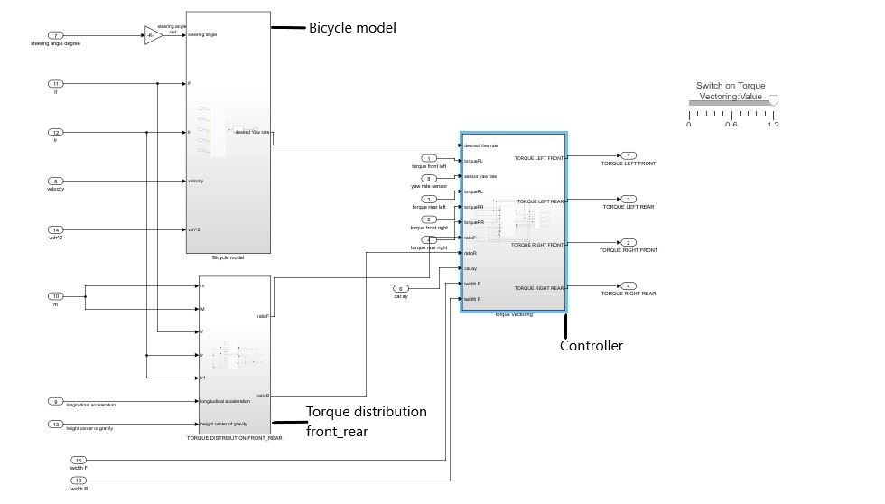
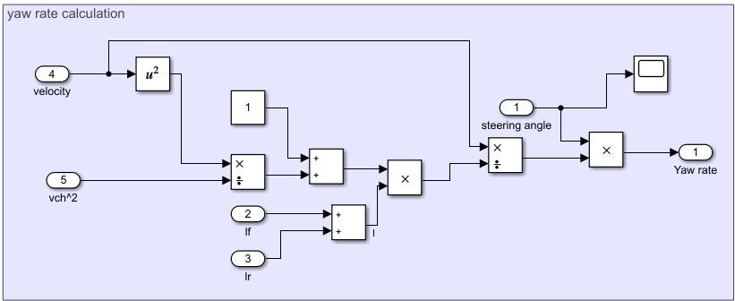
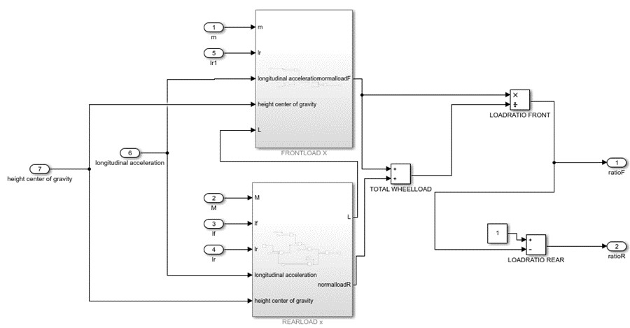
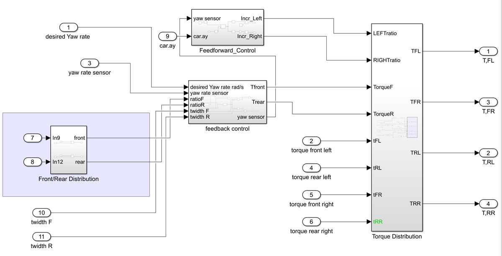
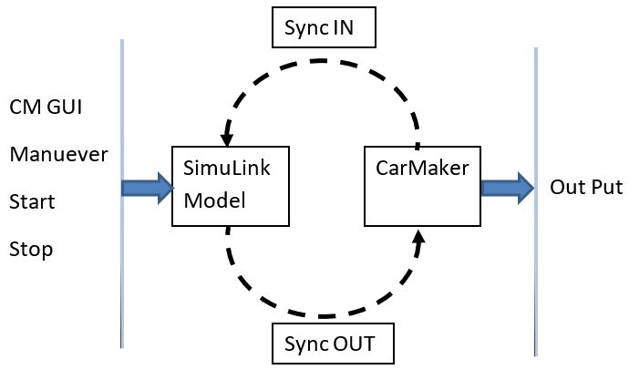
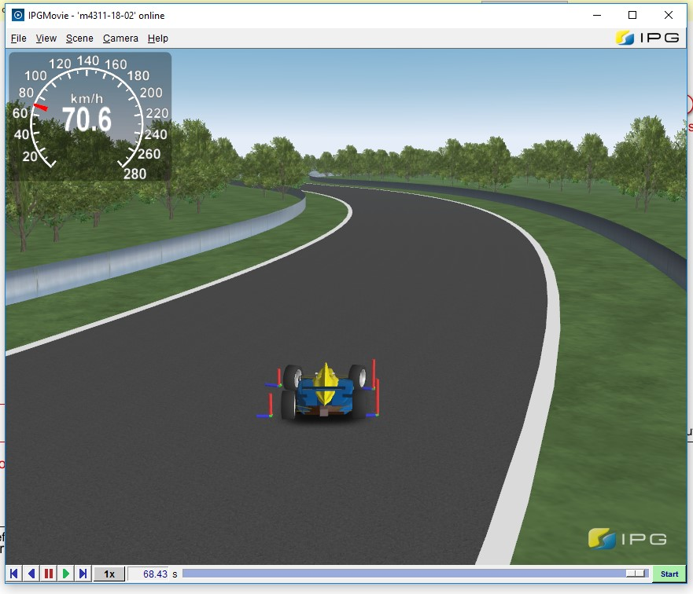
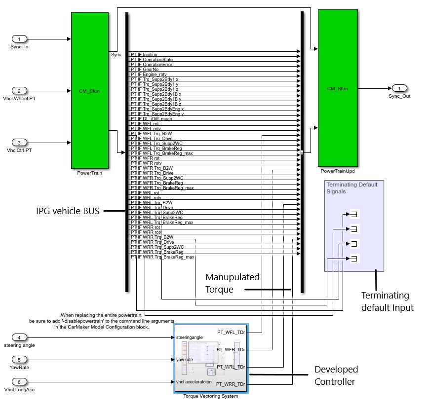
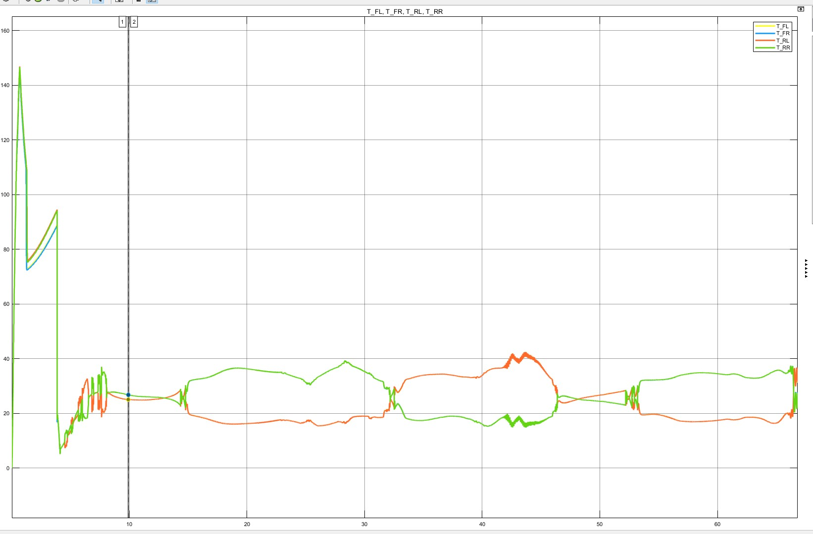
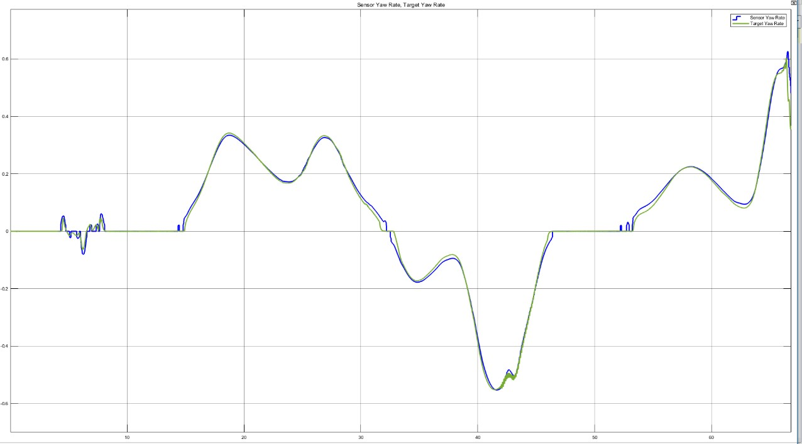

Development of Torque Vectoring System
The aim of the project is to develop a torque vectoring control system for an electric formula student racing car which improves the vehicle’s cornering performance. This system allows for a high level of flexibility in terms of torque distribution to each of the four wheels and consequently creates an ideal case for the application of a torque vectoring system. In addition to the torque distribution/split control based on the lateral forces, there is also a subsystem within the controller that varies the driving motor torque between the wheels of the front and rear axles. The controller logic was built using MATLAB Simulink with the help of standardized blocks from the Simulink library. Using the IPG CarMaker software, the system was then tested by simulating vehicle behavior on circuits modelled after the ones used in the Formula Student Germany competition. The entire Simulink model is distributed in 3 different phases (as shown below).
Bicycle model
The desired Yaw rate is calculated based on the formula of the bicycle model. This value is taken as an input By the feedback controller to distribute the driving forces on the left and right sides of the vehicle.
Torque distribution front_rear
The driving forces are also distributed separately on the front and rear part of the vehicle. Several inputs (giving the state of the car) are fed into the block and based on the calculation the driving force distribution for front and rear sides are calculated in terms of ratios. These ratios are at latter point multiplied by the total torque demand to distribute torque seperatly at front and rear of the vehicle.
Controller logic
Vehicle as whole is considered as the plant with the microcontrollers actuating the control signals with the wheel torques as the chief manipulator. The knowledge of the current lateral acceleration values is used to generate instant command signals to supply torques to the left and the right wheels. The objective of the feedback controller is simple, to carry out correcting actions on the difference between desired and actual output of the system usually referred to as “error”. Here a PID controller is used to get the required yaw correction moment for the vehicle so that vehicle follows the desired yaw rate. This yaw correction moment is then futher used to calculate the desiered additional torque for each tire.
Testing with IPG CarMaker
 IPG CarMaker is used to simulate the vehcile dynamics. All the vehicle data is set in the CarMaker software to simulate the vehicle as close to reality as possible. Once the vehicle data is set, the roads to test the vehicle were defiened. IPG CarMaker provides a generic basic Simulink model which can be used to make complex models around it and test them in parallel.
The developed controller is set up as it takes input from the Vehicle Bus maniplutes them and sends them back to the Bus (can be seen in the figure above).
Results
 First things from the results were observed that there is a difference in the right sides wheel torque(green) and left side wheel torques(red) while cornering (seen in the figure on the left) . From the 2nd image it is observed that the vehicle actual yaw rate(blue) is closely being followed by the desired yaw rate(green). With the series of test performed it was found that the maximum speed limit at which the vehicle can run without going out of stability criteria is 75 kmph. Hence, we were able to gain 4 kmph speed difference with both feedforward and feedback controllers working in parallel as compared to without controller.